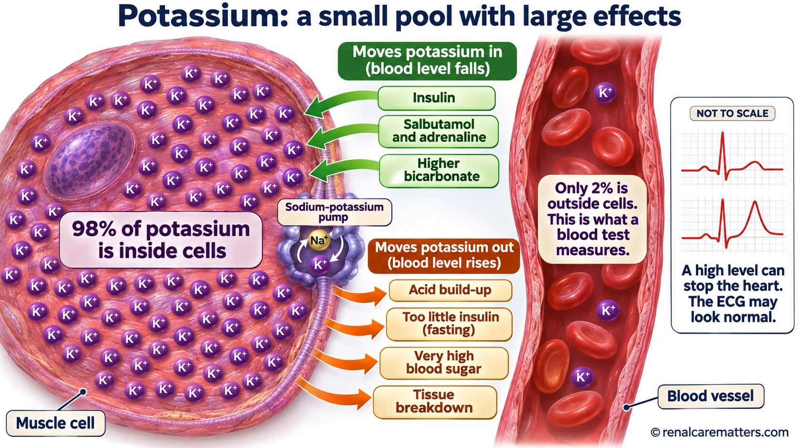
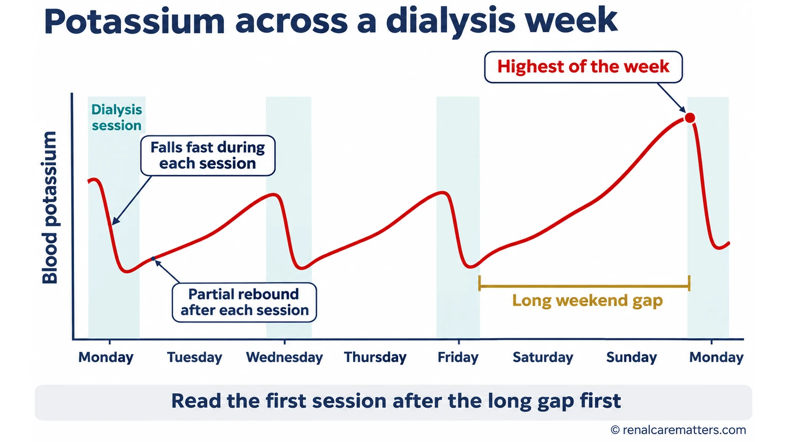
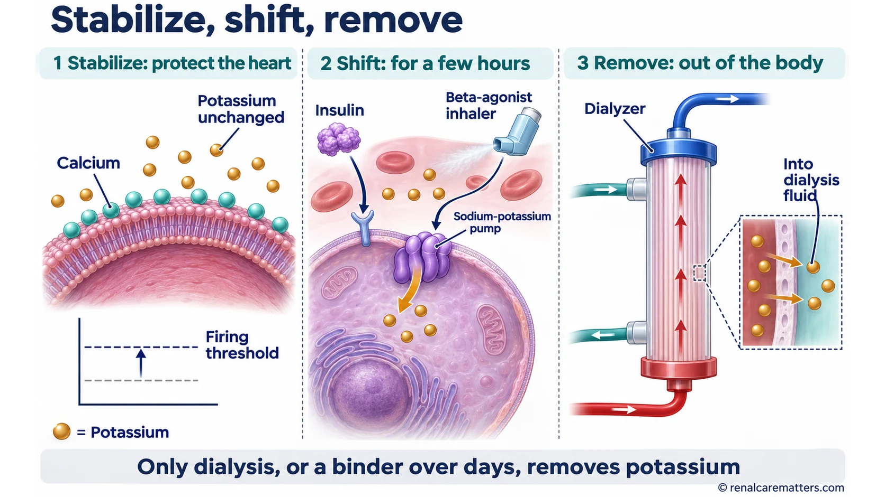
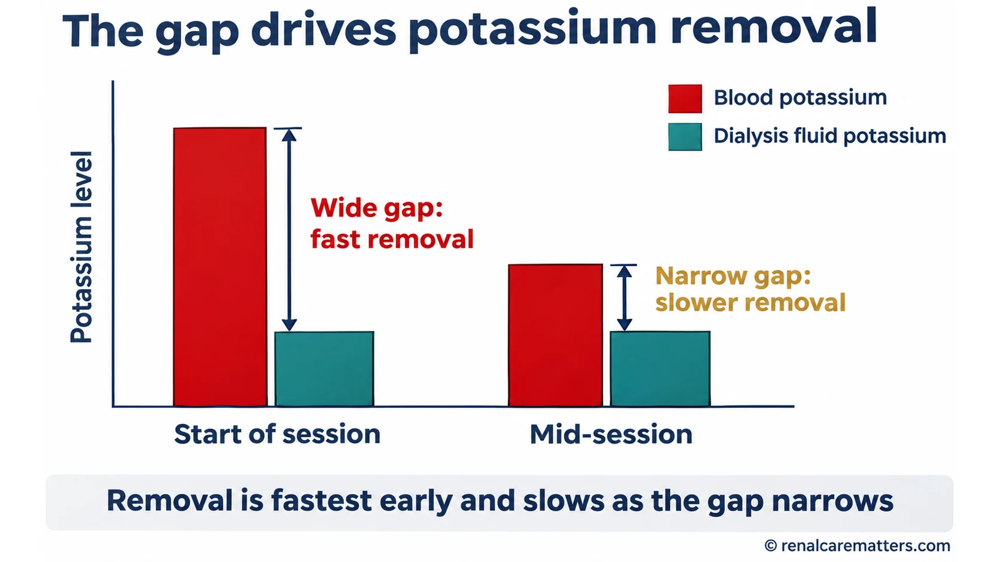
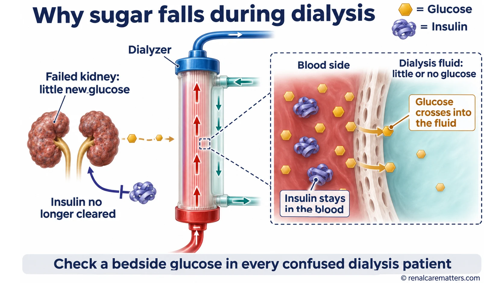
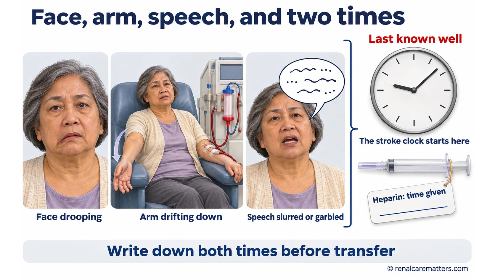

The Confused or Seizing Patient: Potassium, Sugar, and the Brain
High and low potassium, low blood sugar, seizures, altered consciousness, and stroke in the dialysis chair.
PublishedNailathalaGipatikPepalwal:ReferencesMga SanggunianMga TinubdanReng Reperensya:27Audience: Physicians who cover hemodialysis shifts · attending nephrologists, medical directors, and head nurses who orient themRead timeOras ng pagbasaOras sa pagbasaOras ning pamamasa:
This module is study material for physicians on duty in hemodialysis units. It explains the reasoning behind common decisions; it is not a protocol. At the chairside, follow your unit’s protocol and ask the attending nephrologist for guidance. Doses and cut-off values are set by your unit. Every case is fictional.
Learning objectives
After this module you should be able to
Explain why potassium rises highest before the first session of the week, why the electrocardiogram is an insensitive guide, and how dialysis lowers it.
Carry out the stabilize, shift, remove sequence for high potassium in the order your unit’s protocol sets, and recognize the low blood sugar that insulin treatment can cause.
Recognize low potassium, calcium, and magnesium after a session and explain how the dialysis fluid prescription contributes.
Check a bedside glucose in every confused dialysis patient, explain why sugar falls during and after dialysis, and give the first treatment per your unit’s protocol.
Work through altered consciousness and seizure in the chair using a fixed list of dialysis-specific causes, including drug toxicity.
Recognize the signs of stroke, record the last-known-well time, and arrange transfer without delay.
Pre-testBefore you read, answer the 8 self-assessment questions and note your score. After the module, select New set of questions and compare. The difference is what you learned; the questions you still miss are what to reread.
Start here
The big picture, in plain words
In plain wordsPicture a bathtub with the drain closed from Friday afternoon to Monday morning. The tap drips all weekend. On Monday the machine opens the drain for four hours. The water is highest right before the drain opens, and it drops fastest in the first hour.
The picture has a limit. The bathtub is only the blood and the fluid around the cells, and it holds a small share of the body’s potassium. Almost all of it sits inside the cells, as Module 2 explained. Cells can push potassium out or pull it in within minutes. So the blood level can swing fast even when the total in the body barely changes.
Figure 1 · Key terms for this module
HyperkalemiaA blood potassium above the laboratory’s normal range. Its danger is to the heart rhythm.
HypoglycemiaA blood sugar low enough to starve the brain. In dialysis patients it is often silent.
Serum-to-dialysate gradientThe difference between the potassium in the blood and the potassium in the dialysis fluid. It drives removal.
Potassium binderA medicine that holds potassium in the gut so it leaves in the stool.
Altered consciousnessAny change from the patient’s usual alertness, from new confusion to no response.
Last known wellThe last time someone saw the patient at their usual neurologic state. The stroke clock starts here.
Status epilepticusA seizure that does not stop, or repeated seizures without recovery in between.
Most dialysis patients who stop answering have a cause you can reverse within minutes, often a low sugar. A few have a potassium that can stop the heart without symptoms, or a stroke that needs a hospital now. Your work is to run a fixed list in a fixed order, treat what the unit’s protocol allows, and call the attending nephrologist and the stroke team early.
Opening case · fictional
Case: He stopped answering
Mr. Rodolfo “Rudy” Villanueva, 66, is a retired jeepney driver. He has had type 2 diabetes for 18 years. He dialyzes on Monday, Wednesday, and Friday through a right arm fistula. Today is Monday, and he is in hour one of the first session after the weekend. He skipped breakfast because he felt nauseated. He took his usual morning insulin at home.
At 7:40 a.m. the nurse, Ms. Liza Domingo, calls you to his chair. He has stopped answering questions and he is sweating. His blood pressure is 156/90 mm Hg. His heart rate is 58 per minute and regular. His oxygen saturation is 97% on room air. No one has checked his capillary glucose yet. The predialysis potassium from the 6:30 a.m. sample has come back at 6.9 mmol/L. The monitor shows tall, narrow T waves. Ms. Domingo has confirmed that both needles are in place, the blood pump is running, and there are no machine alarms. These values are illustrative, not targets.
Before reading on, decide:
What do you check in the first minute, and why that before anything else?
How do you rank the potassium against the confusion: is one causing the other, or are there two problems?
If insulin is used for the potassium, what must happen over the next several hours, and who sets it?
Keep your answers in mind. The lesson gives you what you need, and the case review near the end shows one sound response.
Lesson · part 1
Why potassium peaks on Monday morning
A healthy kidney excretes almost all the potassium a person eats each day. In kidney failure that exit is nearly closed. The colon excretes a little more than usual, and any remaining urine carries some away. The rest accumulates until the next session.1,2

Figure 2. Almost all potassium sits inside cells. A small shift across the cell wall makes a large change in the blood.
The blood level also depends on where potassium sits. Acidosis, lack of insulin, nonselective beta-blockers, tissue breakdown, and hemolysis in the circuit (Module 16) each move potassium out of the cells.1
The gap from Friday to Monday is about three days; the other gaps are about two. So the week’s highest potassium comes before the first session after the long gap.

Figure 3. Potassium climbs between sessions and falls during each one. The highest value of the week comes before the first session after the long gap, and a partial rebound follows every session.
What the evidence shows
The Dialysis Outcomes and Practice Patterns Study (DOPPS) followed 55,183 patients in 20 countries. Higher serum potassium was associated with death and arrhythmia. Dialysis fluid potassium of 2 versus 3 mEq/L was not associated with either, and moved predialysis potassium very little, about 0.09 mEq/L for each 1 mEq/L of dialysis fluid potassium.3 In a case-control study of cardiac arrest inside dialysis clinics, dialysis fluid potassium below 2 mEq/L was associated with arrest.4 Both are observational, and sicker patients may receive different prescriptions, so neither proves cause.
The electrocardiogram is an insensitive guide
A chart review of 90 hospitalized patients with a potassium of 6 mmol/L or more found the electrocardiogram (ECG) insensitive for high potassium. Changes became more likely as potassium rose, but no T-wave threshold could be set, and readers agreed only moderately.5
Figure 4. Peaked T waves and wide QRS complexes are warnings when present. Their absence does not clear a high potassium.
Read the predialysis potassium as soon as the laboratory reports it. Send any high value to the attending nephrologist with a current ECG.
RememberA normal ECG does not make a high potassium safe. Treat the number and the patient, not the tracing alone.
Lesson · part 2
High potassium: stabilize, shift, remove
Three moves: protect the heart muscle, push potassium into the cells, and take it out of the body. Only the last lowers total body potassium.

Figure 5. Stabilize, shift, remove. Calcium protects the heart muscle without lowering potassium. Insulin and beta-agonists move potassium into cells for a few hours. Only dialysis, or a binder over days, takes potassium out of the body.
How each move works
A heart muscle cell fires when its resting voltage reaches a threshold. High outside potassium moves the resting voltage closer to that threshold. Sodium channels are inactivated, and conduction slows. Calcium raises the threshold and restores the gap, without lowering potassium.1
Insulin and beta-2 agonists such as salbutamol drive the sodium-potassium pump, and potassium moves into cells within minutes. The effect lasts hours, then potassium comes back out. Insulin is given with glucose to prevent a low sugar.1 Dialysis removes potassium from the body. In a patient already connected, it is the definitive step.6 Shifting can blunt removal: in 7 hemodialysis patients, salbutamol before dialysis cut the potassium the session removed by about 40%.7 Whether to add a shifting drug once dialysis is running is for the order set and the attending nephrologist.
What the evidence shows
A Cochrane review of mostly small randomized trials found that inhaled or nebulized salbutamol and intravenous insulin with glucose each lowered potassium, and the combination more than either alone. Dialysis was effective, bicarbonate equivocal, and a resin not effective by four hours. No trial reported deaths or arrhythmias.6
A 2025 systematic review linked to the International Liaison Committee on Resuscitation (ILCOR) included 101 studies. In adults, insulin with glucose, salbutamol, or both lowered potassium by 0.7 to 1.2 mmol/L on average, with very low to low certainty of evidence. Bicarbonate had no effect. The review found no evidence of a clinical benefit of calcium.8 The Cochrane authors cited anecdotal and animal data for calcium when arrhythmias are present.6 Calcium rests on physiology and practice, not trials. A fall in potassium is a surrogate, and no trial shows that any of these treatments prevents death. The Kidney Disease: Improving Global Outcomes (KDIGO) Controversies Conference report on potassium is a conference statement, not a graded recommendation.2
Figure 6 · High potassium in the chair: stabilize, shift, remove
RecognizeRead the potassium and look at the patient and the ECG. Weakness, a slow pulse, or a wide QRS raises the stakes.
StabilizeIf the ECG shows changes, give calcium as the unit’s order set directs. Keep the patient on a cardiac monitor.
ShiftGive insulin with glucose, an inhaled beta-agonist, or both, as the order set directs.
RemoveKeep dialysis running. It is the treatment. Ask the attending nephrologist about extending the session or changing the dialysis fluid.
Watch the sugarArrange glucose checks for several hours after any insulin, at the times the protocol sets.
CallCall the attending nephrologist with the value, the ECG, and what you have given.
The hidden harm: low sugar after insulin
In 221 treated episodes in hospitalized hemodialysis patients, hypoglycemia below 60 mg/dL followed in 13%. It came at a median of 2 hours after the insulin and lasted a median of 2 hours. Patients without diabetes, and those with a lower starting glucose, were at higher risk.9 In a second hospital series of 219 patients, 8.7% became hypoglycemic and 2.3% severely so. Of those who did, 79% had acute kidney injury or were on hemodialysis.10
A healthy kidney clears a large share of the body’s insulin. In kidney failure that clearance falls, and insulin lasts longer than the glucose given with it.11 One emergency department changed its protocol to favor a lower insulin amount in kidney disease. Hypoglycemia fell from 28% of 76 patients to 11% of 63 patients.12 That was a before-and-after study, so other changes may have contributed. All of these data come from hospitals, not outpatient dialysis units. The insulin amount, the glucose given with it, and the check schedule belong to the unit’s order set, which the Medical Director sets.

Figure 7. The gap between blood and dialysis fluid potassium drives removal. It is widest at the start, so removal is fastest early and slows as the session goes on.
Worked example A. Illustrative arithmetic, not a prescription. Serum-to-dialysate potassium gradient = predialysis serum potassium − dialysis fluid potassium. Start of session: 6.9 mmol/L − 2.0 mmol/L = 4.9 mmol/L. Mid-session, serum potassium 4.0 mmol/L: 4.0 − 2.0 = 2.0 mmol/L. The gradient has fallen by more than half, so removal slows as the session goes on.3 What it tells you: removal is fastest early, and the blood falls faster than the cells release potassium, so the level rebounds afterward. What it does not tell you: the post-dialysis potassium, or which dialysis fluid to use, which is the attending nephrologist’s order.
Stop and callStop and call the attending nephrologist at once for a high potassium with any ECG change, muscle weakness, a slow or irregular pulse, or any value above your unit’s action threshold. Start the order set while you call.
Lesson · part 3
Preventing the next high: diet, binders, and what the trials show
Picture a sponge in the gut that soaks up potassium and leaves in the stool. The picture has a limit: binders exchange potassium for sodium or calcium, and they act over days, not minutes.13
What the trials measured
The question is whether a binder prevents what a high potassium predicts: arrhythmia and sudden death. A lower potassium is only a surrogate for those events.
Newer binders may make little or no difference to death (risk ratio 0.69, 95% confidence interval 0.11 to 4.32), low certainty13
DIALIZE-Outcomes stopped with about a third of the planned events, because events were fewer than expected and many patients stopped the study drug. Low potassium occurred in 3.0% on the binder and 1.4% on placebo.15 The early stop means it cannot exclude a modest benefit. It does show that better potassium control did not bring fewer arrhythmia events over the time studied.
RememberBinders lower the number. They have not yet been shown to prevent the events the number predicts.
Diet
The KDIGO conference moved away from blanket dietary potassium restriction toward healthy eating patterns, including plant-based foods. It noted that few data show diet changes alone return a high serum potassium to normal.2 Module 23 covers food in detail. Hidden sources still matter, such as salt substitutes made with potassium chloride.
What you do
Report a pattern of predialysis highs with the dates and ECGs. Ask about missed or shortened sessions, new medicines, constipation, and diet. Binders, dialysis fluid potassium, and diet referral are decisions for the attending nephrologist and the dietitian. The dietary potassium calculator on the site helps when you review a food record together.
Lesson · part 4
Low after the session: potassium, calcium, and magnesium
Sometimes the drain works too well. A low-potassium dialysis fluid pulls the blood level down fast during the session. The cells have not yet given back their stores, so the blood level is lowest at the end. Over the next hours potassium moves out of the cells again, and the level rebounds.17,3
Why a fast fall matters to the heart
The heart responds to the ratio of potassium inside and outside the cell. A fast fall outside lengthens repolarization, seen as a long QT interval. Low calcium and low magnesium lengthen it too, and digoxin or QT-prolonging medicines add risk. The DOPPS authors noted that the blood-to-dialysis fluid gradient drives fast electrolyte shifts, which may contribute to arrhythmias.3
Figure 8 · Three lows after a session
Low potassiumWeakness, palpitations, extra beats, or a long QT after a session with a low-potassium dialysis fluid, poor intake, vomiting, or diarrhea.
Low calciumTingling around the mouth or in the fingers, muscle twitching, cramps, a long QT. Read it against the albumin, and ask for an ionized calcium if the picture does not fit.
Low magnesiumTremor, weakness, extra beats, a long QT. It often travels with low potassium and makes it harder to correct.
What the evidence shows
A case-control study compared 502 patients who had a cardiac arrest inside dialysis clinics with 1,632 matched controls, drawn from 43,200 patients. Those who arrested were more often exposed to dialysis fluid potassium below 2 mEq/L, and to low-calcium dialysis fluid. Their predialysis potassium did not explain the difference.4 In DOPPS, outcomes did not differ between 2 and 3 mEq/L baths.3 The two do not conflict: one studied baths below 2 mEq/L, the other two common baths. Both are observational. The best dialysis fluid potassium for a given patient is unknown, and none of the sources in this module sets one number for everyone. The attending nephrologist chooses it.
What you do
For palpitations, weakness, or tingling around the mouth after a session, obtain an ECG and ask for electrolytes per your unit’s protocol. Measure the QT interval and correct it for heart rate; the corrected QT calculator on the site does the arithmetic. Read a low calcium against the albumin, and check for digoxin and QT-prolonging medicines. Give replacement only as the unit’s protocol allows, and report to the attending nephrologist, who owns the dialysis fluid prescription.
RememberA rhythm problem after a session is a dialysis fluid question until proven otherwise. Send the ECG, the electrolytes, and the bath to the attending nephrologist.
Lesson · part 5
Sugar falls in the chair
Glucose crosses the dialyzer membrane the way urea does. If the dialysis fluid holds less glucose than the blood, glucose leaves with every pass, and the organs that would top it up are slow.

Figure 9. Why sugar falls during dialysis: glucose leaves into the dialysis fluid, insulin lingers because the kidney no longer clears it, and the failed kidney makes little new glucose.
Why the sugar falls
Glucose diffuses into a dialysis fluid that holds little or none, and some moves into red cells. A healthy kidney makes a share of the body’s new glucose between meals; a failed kidney makes little. The failed kidney also clears insulin slowly, so insulin and sulfonylureas act longer than expected. Many patients eat little before a morning session. Hours after the session, a rebound high sugar may follow.11
Autonomic neuropathy blunts the warning signs of a low sugar, and beta-blockers blunt the fast pulse and tremor, though sweating often remains. The first sign may be confusion, drowsiness, odd behavior, or a seizure.
What the evidence shows
A Japanese study used continuous glucose monitors in 98 hemodialysis patients with type 2 diabetes whose dialysis fluid contained 100 to 150 mg/dL of glucose. Sensor glucose still fell steadily during dialysis, and in half of them dropped below the dialysis fluid glucose. Twenty-one patients (21%) had hemodialysis-related hypoglycemia below 70 mg/dL, during the session or before the next meal. Every one of these episodes was asymptomatic.18 A small study of 20 patients compared dialysis fluids with and without glucose. Hypoglycemia during the session occurred only with glucose-free or glucose-poor fluid, and it was linked to a lower predialysis glucose.19 Both are observational. They suggest that glucose in the dialysis fluid lowers the risk without removing it, and that a low starting sugar is a warning.
Ask whether your unit’s dialysis fluid contains glucose (Module 7).
What you do
Check a capillary glucose in every confused, sweaty, unusually drowsy, or seizing dialysis patient. Only airway, breathing, and circulation come before it. Treat a low value as your unit’s protocol directs, by mouth if the patient can swallow safely, and recheck at the protocol’s interval. Then find out what insulin or sulfonylurea was taken, when, and what the patient ate, and report it to the attending nephrologist. Long-term diabetes regimens belong to Module 22.
Worked example B. Illustrative decision walk-through, not a protocol. A patient without diabetes has a starting glucose of 95 mg/dL. At 8:00 a.m. she receives insulin with glucose under the unit’s hyperkalemia order set. Published median time to hypoglycemia after insulin = 2 hours; median duration = 2 hours.9 Median onset: 8:00 + 2 hours = 10:00 a.m. Median end of the low: 10:00 + 2 hours = 12:00 noon. A watch that ends at 9:00 a.m. misses most of the risk. In this illustration the checks run from 8:00 a.m. to at least noon, longer if values are falling. What it tells you: the window is hours long, and this patient’s profile carries higher risk. What it does not tell you: the schedule or the glucose to give. Those are in the unit’s protocol.
RememberCheck the sugar first. It takes one minute, and it is the cause you can reverse fastest.
Lesson · part 6
Confusion and seizure in the chair: a fixed list
Think of a checklist taped to the machine, run in the same order every time, fastest reversible causes first.
The brain needs steady glucose, oxygen, blood pressure, and a stable chemical bath. Dialysis disturbs all of these at once: it removes fluid, shifts electrolytes and water, and is often given with heparin. The patient also carries drugs that the kidney would have cleared.20,21
Figure 10 · Altered consciousness in the chair: the order of checks
Airway and breathingLook, listen, and check the oxygen saturation. Give oxygen per protocol. Confirm that the access and needles are secure.
GlucoseCapillary glucose now. Treat a low value per protocol.
PressureA low pressure starves the brain. Module 13 covers the response.
OxygenHypoxia from fluid overload or a dialyzer reaction. Look at the breathing pattern.
Electrolytes and the ECGPotassium, calcium, magnesium, and sodium. A rhythm strip.
DrugsReview what was given today and what accumulates in kidney failure.
Stroke signsFace, arm, speech, gaze. Record the last-known-well time.
InfectionTemperature, the catheter site, and the chest. Module 17 covers fever.
Causes special to dialysis
Cause
Clue at the chair
First check
Who to call
Low sugar
Sweating, drowsiness, odd behavior; insulin or a sulfonylurea taken, little eaten
Capillary glucose
Attending nephrologist after treatment per protocol
Potassium, calcium, magnesium, or sodium
Weakness, tingling, twitching, an abnormal ECG
ECG and electrolytes
Attending nephrologist
Low pressure
Yawning, dim vision, a late-session drop
Blood pressure (Module 13)
Attending nephrologist if no recovery
Hypoxia
Breathlessness, crackles, a falling saturation
Oxygen saturation
Attending nephrologist; emergency team if severe
Disequilibrium
A new patient with a very high urea in the first sessions; headache, nausea, restlessness
Session number and urea (Module 12)
Attending nephrologist
Drug toxicity
Confusion, myoclonus, or drowsiness after a new or increased medicine
Medicine list (Module 20)
Attending nephrologist
Infection and sepsis
Fever, chills, a catheter, low pressure
Temperature and the catheter site (Module 17)
Attending nephrologist
Stroke or bleeding in the head
Facial droop, one-sided weakness, slurred speech, sudden severe headache
Face-arm-speech check, last-known-well time
Attending nephrologist and emergency transfer
Air embolism
Sudden cough, chest tightness, collapse, air in the venous line
The venous line and the air detector (Module 16)
Call for help now; attending nephrologist
Uremia
Missed sessions, drowsiness, twitching
Attendance record and urea
Attending nephrologist
Drugs that build up
Several medicines cleared by the kidney accumulate in kidney failure, and their toxicity looks like a brain problem: gabapentin and pregabalin (drowsiness, confusion), cefepime (confusion, myoclonus, nonconvulsive seizures), acyclovir and valacyclovir (confusion, hallucinations), baclofen (drowsiness, coma), and some opioids. Module 20 covers dosing. At the chair, look for a new medicine, a recent increase, or a prescription from a doctor who did not know the patient is on dialysis.
Seizures
A seizure in kidney failure often has a metabolic cause: low sugar, low sodium, low calcium, uremia, or drug toxicity. A review put the incidence of uremic seizures in kidney failure at about 10%. They are often nonconvulsive and can mimic the drowsy confusion of uremia. Antiseizure drugs behave differently in kidney failure, and dialysis removes some of them.22 A patient who stays confused after a seizure needs a neurologic assessment, not only time.
Figure 11 · Seizure at the machine
ProtectKeep the patient in the chair, turned to the side. Hold the access arm so the needles stay in.
Stop the blood pumpPer protocol, stop the pump. Decide with the nurse whether the blood can be returned safely or the lines should be clamped.
Airway and oxygenClear the airway and give oxygen per protocol.
GlucoseCheck a capillary glucose and treat a low value per protocol.
CallCall for help in the unit and call the attending nephrologist. Time the seizure.
Antiseizure drugGive only the drug the unit’s protocol names, by the person it authorizes. Doses differ in kidney failure.
TransferA seizure that does not stop, or repeated seizures without recovery, is status epilepticus. Arrange emergency transfer.
Stop and callStop and call the attending nephrologist for every seizure, and for any new confusion that does not clear once the glucose and the pressure are corrected. Call for emergency transfer for status epilepticus.
Lesson · part 7
Stroke: the clock starts at last-known-well
Picture a stopwatch that started when the nurse last saw the patient normal, not when you reached the chair. Every stroke treatment depends on that time.
Why stroke is common in the chair
Dialysis patients often carry high blood pressure, diabetes, atrial fibrillation, and hardened arteries at once. Dialysis adds its own risks: pressure falls during the session, and heparin raises the risk of bleeding. In a population-based United States cohort, incident dialysis patients had hospitalized stroke rates 4.4 to 9.7 times those of the general population, depending on sex and race group.23 A Japanese single-center series of 151 strokes in hemodialysis patients over 22 years found that 34% of brain infarctions began during dialysis or within 30 minutes after it. Only 19% of brain hemorrhages did.24 Both are observational.

Figure 12. Face, arm, speech, and two times. The stroke clock starts when the patient was last seen normal. The heparin time tells the stroke team what is still in the blood.
What the evidence says about treatment
Clot-dissolving treatment (thrombolysis) and clot removal (thrombectomy) work only within time windows. Trial data in dialysis patients are scarce. In a large United States registry of 44,410 patients given thrombolysis, chronic kidney disease was not associated with more symptomatic brain hemorrhage after adjustment, although in-hospital death was higher.25 In a national database, 1,072 dialysis-dependent patients given thrombolysis had brain hemorrhage rates similar to other patients (5.2% versus 6.1%). Their in-hospital death rate was higher, 22% versus 11%, with an adjusted odds ratio of 1.92.26 These are observational data. Dialysis patients are sicker, and the excess deaths may reflect that rather than the treatment.
The 2026 American Heart Association/American Stroke Association (American Heart Association (AHA)/ASA) guideline for acute ischemic stroke replaced the 2018 guideline and its 2019 update. It revised thrombolytic choice and eligibility and thrombectomy eligibility.27 The stroke team at the receiving hospital decides eligibility, not the dialysis chair. Your job is to get the patient there fast with the facts the team needs.
What you do
Look for a facial droop, a drifting arm, slurred speech, a gaze to one side, or a sudden severe headache. Check the glucose, because a low sugar can mimic stroke. Record the last-known-well time and the heparin given this session. Stop dialysis per protocol, and return the blood if the circuit is sound. Arrange urgent transfer to a stroke-capable hospital and call the attending nephrologist. The stroke scale calculator on the site helps you describe the deficit. Module 19 covers heparin and bleeding.
Worked example C. Illustrative times on a transfer note, not an eligibility decision. Heparin bolus given: 7:30 a.m. Last seen at her usual state by the nurse: 9:10 a.m. Deficit noticed: 9:45 a.m. Departure by ambulance: 10:05 a.m. Elapsed from last known well to departure = 10:05 − 9:10 = 55 minutes. Elapsed from heparin to departure = 10:05 − 7:30 = 2 hours 35 minutes. What it tells you: the clock is counted from 9:10, not from 9:45, and the stroke team needs the heparin time. What it does not tell you: whether she can receive thrombolysis. That is the stroke team’s decision.
Stop and callStop and call the attending nephrologist, and arrange emergency transfer, for any new focal weakness, facial droop, slurred speech, or sudden severe headache. Do not wait for the session to finish.
RememberWrite down two times at once: when the patient was last normal, and when heparin was last given.
Figure 13 · Call card: the confused, seizing, or weak patient
RecognizeNew confusion, drowsiness, sweating, twitching or seizure, slurred speech, one-sided weakness, or palpitations with weakness.
First 2 minutesAirway and oxygen per protocol. Capillary glucose. Blood pressure. ECG and the latest potassium. Face-arm-speech check. Note the last-known-well time.
Stop dialysis?Stop the blood pump per protocol for a seizure, a suspected stroke, or an unstable rhythm. For a high potassium without instability, dialysis is the treatment: do NOT stop it without the attending nephrologist.
Return the blood?Yes, when the circuit is intact and the patient can receive it safely per protocol. Do NOT return the blood if air in the line or hemolysis is suspected (Module 16); clamp the lines and keep the circuit.
CallThe attending nephrologist at once. Emergency transfer to a stroke-capable hospital for stroke signs, status epilepticus, or a dangerous arrhythmia. The code team for arrest (Module 15).
WriteThe times of symptom onset, last known well, heparin, and insulin. Glucose and potassium values. ECG findings. Treatments given under protocol. Who was called and when. Where the patient went.
On the floor
Real situations: problems and solutions
These are fictional but typical. For each one, cover the answer, decide what you would do, then compare. Where a step depends on local rules, your unit’s procedure and your supervisor’s direction come first.
Weak legs on Monday morning
What you see
Mrs. Teresita Manalo, 59, missed Friday’s session for a family wake. On Monday she says her legs feel heavy. Her pulse is 48 and regular. The predialysis potassium is not back yet, and the monitor shows wide QRS complexes.
What is likely going on
Severe high potassium after a missed session and a long gap. Muscle weakness and a wide QRS mean conduction is failing.
What to do
Call for help and keep her on the monitor. Start the unit’s hyperkalemia order set now, without waiting for the laboratory. Start dialysis as the protocol allows, and call the attending nephrologist. Prepare for a code (Module 15).
Why it matters
The ECG and the weakness are enough to act on. Waiting for the number loses minutes the heart may not have.
The second low sugar
What you see
Mr. Arnel Pascual, 71, without diabetes, received insulin with glucose for high potassium at 8:00 a.m. His glucose at 8:30 was normal and no further checks were ordered. At 10:20 he is sweating and does not recognize his daughter.
What is likely going on
Late hypoglycemia after insulin for potassium. The kidney clears insulin slowly, and the glucose given with it has run out.
What to do
Check the capillary glucose now and treat per protocol. Restart checks at the protocol’s interval for several more hours. Call the attending nephrologist and report the event.
Why it matters
Published lows came at a median of 2 hours after insulin. A single early check gives false comfort.
Drowsy after a new pain medicine
What you see
Mrs. Lourdes Ramos, 63, was started on gabapentin for burning feet by a clinic doctor last week. Today she falls asleep mid-sentence during dialysis. Glucose, pressure, oxygen, and potassium are normal. Face-arm-speech check is normal.
What is likely going on
Gabapentin accumulates in kidney failure and causes drowsiness and confusion.
What to do
Keep her safe in the chair and continue to observe. Review the full medicine list. Call the attending nephrologist, who will decide on the medicine. Write a note so the clinic doctor learns she is on dialysis.
Why it matters
Drug toxicity is common and reversible, and it is found only by asking what is new.
Slurred speech after the bolus
What you see
Mr. Danilo Cruz, 68, received his heparin bolus at 7:30 a.m. At 9:45 the nurse notices his speech is slurred and his right arm drifts. She last saw him normal at 9:10.
What is likely going on
A stroke during dialysis. Infarction is more common than hemorrhage during or soon after a session, but only a scan can tell them apart.
What to do
Check glucose. Stop dialysis per protocol and return the blood if the circuit is sound. Call the attending nephrologist and arrange urgent transfer to a stroke-capable hospital. Write down 9:10 as last known well and 7:30 as the heparin time.
Why it matters
The stroke team needs both times to judge treatment. Writing 9:45 as the onset would mislead them.
A seizure in a new patient
What you see
Ms. Carmela Reyes, 45, is in her second ever session. Her urea before dialysis was very high. In hour two she complains of headache and nausea, becomes restless, and then has a generalized seizure.
What is likely going on
Dialysis disequilibrium is likely (Module 12), but low sugar, low sodium, low calcium, and bleeding in the head must still be checked.
What to do
Protect her and the access. Stop the blood pump per protocol and decide with the nurse about returning the blood. Airway, oxygen, and glucose. Call for help and the attending nephrologist. Give an antiseizure drug only as the unit’s protocol directs. Transfer if the seizure does not stop.
Why it matters
A likely cause is not a proven cause. The fixed list catches the second problem hiding behind the first.
Field notes
On Monday and Tuesday mornings, read every predialysis potassium as it comes back. The long gap produces the highs.
Carry a glucose meter on your rounds, or know exactly where it is. The first minute matters.
When insulin is given for potassium, write the check times on the session sheet before you leave the chair.
Ask every confused patient’s family two questions: when was he last normal, and what medicine is new?
Learn your unit’s hyperkalemia order set, seizure protocol, and stroke transfer route before your first shift.
Case review
Back to the case: He stopped answering
What do you check in the first minute? After a glance at the airway and breathing, you ask for a capillary glucose. He took insulin, skipped breakfast, and is losing glucose into the dialysis fluid. Low sugar is the likeliest cause of his confusion and the fastest to reverse. The reading is 46 mg/dL (illustrative). Ms. Domingo treats it under the unit’s protocol. Within minutes he wakes and asks for his wife. His face-arm-speech check is normal, and you record when he was last seen well.
How do you rank the potassium against the confusion? There are two problems. High potassium causes weakness and rhythm problems, rarely confusion. The low sugar explains the confusion, and its quick reversal confirms it. The potassium of 6.9 mmol/L with peaked T waves and a pulse of 58 is the more dangerous problem, because it can stop the heart without warning. You keep him on the monitor and start the hyperkalemia order set. Dialysis is the treatment, so it keeps running. You call the attending nephrologist with both problems, the ECG, and the fact that he was hypoglycemic minutes ago, which weighs on whether insulin is added while dialysis is removing potassium.
If insulin is used, what must happen next? Glucose checks continue for several hours, because published hypoglycemia after insulin began at a median of 2 hours and lasted a median of 2 hours.9 Mr. Villanueva is at higher risk: he has already been low, has not eaten, and his own insulin is still acting. The amounts and the check schedule come from the unit’s order set, which the Medical Director sets. You make sure he eats, the checks continue past the end of dialysis, and he goes home only when the attending nephrologist agrees.
Interactive case · fictional
Interactive case: Sweaty and silent
Work through a shift one decision at a time. The panel at the top changes with what you choose. After each choice you see why it is, or is not, the best move; after a weaker one you can try again or carry on and see where it leads. Your first choice at each step is scored. The score stays on this device and nothing is sent anywhere. In real practice, your unit’s protocol and the people responsible for each decision come first.
Skills checklist: Bedside glucose and focused neurologic screen in a confused dialysis patient
Perform this assessment on a simulated patient or a colleague in a dialysis chair while your preceptor observes and plays the nurse. Your preceptor rates each step as satisfactory, needs practice, or not observed. Steps marked Critical must all be satisfactory before sign-off. This checklist supports supervised learning; your unit’s own procedure and competency form are the authority. A printable version of every checklist is on the trainer page.
CriticalConfirms the airway and breathing, and that the access and needles are secure.
CriticalObtains a capillary glucose within the first minute and states the unit’s action level from the protocol.
Checks the blood pressure and oxygen saturation and relates them to the low-pressure response in Module 13.
CriticalReviews the latest potassium and asks for an ECG; names the ECG features of high potassium and states that a normal ECG does not exclude it.
Records the level of consciousness with the Glasgow Coma Scale and checks the pupils.
CriticalPerforms a face-arm-speech screen and records the last-known-well time.
Records the time and amount of the last heparin, and any insulin or sulfonylurea taken today.
Reviews the medicine list for gabapentin, pregabalin, cefepime, acyclovir or valacyclovir, baclofen, and opioids.
Decides with the nurse, per protocol, whether to stop the blood pump and whether returning the blood is safe.
CriticalStates when the blood must not be returned.
CriticalCalls the attending nephrologist with an Situation, Background, Assessment, Recommendation (SBAR) summary (situation, background, assessment, recommendation) and arranges transfer when indicated.
Documents events, times, values, and actions in the session record.
Placement activity. For two weeks, look at the predialysis potassium and the morning glucose history of every patient with diabetes on your first session after the long gap. Note any value that would have triggered the order set, and review the list with your preceptor and the attending nephrologist.
Self-assessment
Check your understanding
Each visit draws 8 questions at random from this module’s 15-question bank. Choose the single best answer for each, then select Check answers; an explanation appears under the best answer. Select New set of questions for a different mix. A good target is 7 of 8 on two different sets. Nothing you select is sent anywhere; scoring happens in your browser.
Palmer, B. F., & Clegg, D. J. (2016). Physiology and pathophysiology of potassium homeostasis. Advances in Physiology Education, 40(4), 480–490. https://doi.org/10.1152/advan.00121.2016
Clase, C. M., Carrero, J. J., Ellison, D. H., Grams, M. E., Hemmelgarn, B. R., Jardine, M. J., Kovesdy, C. P., Kline, G. A., Lindner, G., Obrador, G. T., Palmer, B. F., Cheung, M., Wheeler, D. C., Winkelmayer, W. C., Pecoits-Filho, R., & Conference Participants. (2020). Potassium homeostasis and management of dyskalemia in kidney diseases: Conclusions from a Kidney Disease: Improving Global Outcomes (KDIGO) Controversies Conference. Kidney International, 97(1), 42–61. https://doi.org/10.1016/j.kint.2019.09.018
Karaboyas, A., Zee, J., Brunelli, S. M., Usvyat, L. A., Weiner, D. E., Maddux, F. W., Nissenson, A. R., Jadoul, M., Locatelli, F., Winkelmayer, W. C., Port, F. K., Robinson, B. M., & Tentori, F. (2017). Dialysate potassium, serum potassium, mortality, and arrhythmia events in hemodialysis: Results from the Dialysis Outcomes and Practice Patterns Study (DOPPS). American Journal of Kidney Diseases, 69(2), 266–277. https://doi.org/10.1053/j.ajkd.2016.09.015
Pun, P. H., Lehrich, R. W., Honeycutt, E. F., Herzog, C. A., & Middleton, J. P. (2011). Modifiable risk factors associated with sudden cardiac arrest within hemodialysis clinics. Kidney International, 79(2), 218–227. https://doi.org/10.1038/ki.2010.315
Montague, B. T., Ouellette, J. R., & Buller, G. K. (2008). Retrospective review of the frequency of ECG changes in hyperkalemia. Clinical Journal of the American Society of Nephrology, 3(2), 324–330. https://doi.org/10.2215/CJN.04611007
Mahoney, B. A., Smith, W. A. D., Lo, D. S., Tsoi, K., Tonelli, M., & Clase, C. M. (2005). Emergency interventions for hyperkalaemia. Cochrane Database of Systematic Reviews, 2005(2), CD003235. https://doi.org/10.1002/14651858.CD003235.pub2
Allon, M., & Shanklin, N. (1995). Effect of albuterol treatment on subsequent dialytic potassium removal. American Journal of Kidney Diseases, 26(4), 607–613. https://doi.org/10.1016/0272-6386(95)90597-9
Jessen, M. K., Andersen, L. W., Djakow, J., Chong, N. K., Stankovic, N., Staehr, C., Vammen, L., Petersen, A. H., Johannsen, C. M., Eggertsen, M. A., Mortensen, S. Ø., Høybye, M., Nørholt, C., Holmberg, M. J., Granfeldt, A., & International Liaison Committee on Resuscitation (ILCOR) Advanced Paediatric Life Support Task Forces. (2025). Pharmacological interventions for the acute treatment of hyperkalaemia: A systematic review and meta-analysis. Resuscitation, 208, 110489. https://doi.org/10.1016/j.resuscitation.2025.110489
Apel, J., Reutrakul, S., & Baldwin, D. (2014). Hypoglycemia in the treatment of hyperkalemia with insulin in patients with end-stage renal disease. Clinical Kidney Journal, 7(3), 248–250. https://doi.org/10.1093/ckj/sfu026
Schafers, S., Naunheim, R., Vijayan, A., & Tobin, G. (2012). Incidence of hypoglycemia following insulin-based acute stabilization of hyperkalemia treatment. Journal of Hospital Medicine, 7(3), 239–242. https://doi.org/10.1002/jhm.977
Abe, M., & Kalantar-Zadeh, K. (2015). Haemodialysis-induced hypoglycaemia and glycaemic disarrays. Nature Reviews Nephrology, 11(5), 302–313. https://doi.org/10.1038/nrneph.2015.38
McNicholas, B. A., Pham, M. H., Carli, K., Chen, C. H., Colobong-Smith, N., Anderson, A. E., & Pham, H. (2018). Treatment of hyperkalemia with a low-dose insulin protocol is effective and results in reduced hypoglycemia. Kidney International Reports, 3(2), 328–336. https://doi.org/10.1016/j.ekir.2017.10.009
Natale, P., Palmer, S. C., Ruospo, M., Saglimbene, V. M., & Strippoli, G. F. (2020). Potassium binders for chronic hyperkalaemia in people with chronic kidney disease. Cochrane Database of Systematic Reviews, 2020(6), CD013165. https://doi.org/10.1002/14651858.CD013165.pub2
Fishbane, S., Ford, M., Fukagawa, M., McCafferty, K., Rastogi, A., Spinowitz, B., Staroselskiy, K., Vishnevskiy, K., Lisovskaja, V., Al-Shurbaji, A., Guzman, N., & Bhandari, S. (2019). A phase 3b, randomized, double-blind, placebo-controlled study of sodium zirconium cyclosilicate for reducing the incidence of predialysis hyperkalemia. Journal of the American Society of Nephrology, 30(9), 1723–1733. https://doi.org/10.1681/ASN.2019050450
Fishbane, S., Dember, L. M., Jadoul, M., Kovesdy, C. P., Guzman, N., Kordzakhia, G., Lisovskaja, V., Sekar, P., Wessman, P., Al-Shurbaji, A., & Herzog, C. A. (2025). The randomized DIALIZE-Outcomes trial evaluated sodium zirconium cyclosilicate in hemodialysis. Kidney International, 108(4), 686–694. https://doi.org/10.1016/j.kint.2025.06.016
Middleton, J. P., Sun, S., Murray, S., Davenport, C. A., & Daubert, J. P. (2024). Randomized trial of patiromer on efficacy to reduce episodic hyperkalemia in patients with ESKD treated with hemodialysis. Kidney International Reports, 9(11), 3218–3225. https://doi.org/10.1016/j.ekir.2024.08.005
Daugirdas, J. T., Blake, P. G., & Ing, T. S. (Eds.). (2015). Handbook of dialysis (5th ed.). Wolters Kluwer.
Hayashi, A., Shimizu, N., Suzuki, A., Matoba, K., Momozono, A., Masaki, T., Ogawa, A., Moriguchi, I., Takano, K., Kobayashi, N., & Shichiri, M. (2021). Hemodialysis-related glycemic disarray proven by continuous glucose monitoring; glycemic markers and hypoglycemia. Diabetes Care, 44(7), 1647–1656. https://doi.org/10.2337/dc21-0269
Burmeister, J. E., Miltersteiner, D. da R., Burmeister, B. O., & Campos, J. F. (2015). Risk of hypoglycemia during hemodialysis in diabetic patients is related to lower pre-dialysis glycemia. Archives of Endocrinology and Metabolism, 59(2), 137–140. https://doi.org/10.1590/2359-3997000000026
Greenberg, K. I., & Choi, M. J. (2021). Hemodialysis emergencies: Core curriculum 2021. American Journal of Kidney Diseases, 77(5), 796–809. https://doi.org/10.1053/j.ajkd.2020.11.024
Saha, M., & Allon, M. (2017). Diagnosis, treatment, and prevention of hemodialysis emergencies. Clinical Journal of the American Society of Nephrology, 12(2), 357–369. https://doi.org/10.2215/CJN.05260516
Títoff, V., Moury, H. N., Títoff, I. B., & Kelly, K. M. (2019). Seizures, antiepileptic drugs, and CKD. American Journal of Kidney Diseases, 73(1), 90–101. https://doi.org/10.1053/j.ajkd.2018.03.021
Seliger, S. L., Gillen, D. L., Longstreth, W. T., Kestenbaum, B., & Stehman-Breen, C. O. (2003). Elevated risk of stroke among patients with end-stage renal disease. Kidney International, 64(2), 603–609. https://doi.org/10.1046/j.1523-1755.2003.00101.x
Toyoda, K., Fujii, K., Fujimi, S., Kumai, Y., Tsuchimochi, H., Ibayashi, S., & Iida, M. (2005). Stroke in patients on maintenance hemodialysis: A 22-year single-center study. American Journal of Kidney Diseases, 45(6), 1058–1066. https://doi.org/10.1053/j.ajkd.2005.02.028
Ovbiagele, B., Smith, E. E., Schwamm, L. H., Grau-Sepulveda, M. V., Saver, J. L., Bhatt, D. L., Hernandez, A. F., Peterson, E. D., & Fonarow, G. C. (2014). Chronic kidney disease and bleeding complications after intravenous thrombolytic therapy for acute ischemic stroke. Circulation: Cardiovascular Quality and Outcomes, 7(6), 929–935. https://doi.org/10.1161/CIRCOUTCOMES.114.001144
Tariq, N., Adil, M. M., Saeed, F., Chaudhry, S. A., & Qureshi, A. I. (2013). Outcomes of thrombolytic treatment for acute ischemic stroke in dialysis-dependent patients in the United States. Journal of Stroke and Cerebrovascular Diseases, 22(8), e354–e359. https://doi.org/10.1016/j.jstrokecerebrovasdis.2013.03.016
Prabhakaran, S., Gonzalez, N. R., Zachrison, K. S., Adeoye, O., Alexandrov, A. W., Ansari, S. A., Chapman, S., Czap, A. L., Dumitrascu, O. M., Ishida, K., Jadhav, A. P., Johnson, B., Johnston, K. C., Khatri, P., Kimberly, W. T., Lee, V. H., Leslie-Mazwi, T. M., Mac Grory, B., Madsen, T. E., … Peer Review Committee. (2026). 2026 guideline for the early management of patients with acute ischemic stroke: A guideline from the American Heart Association/American Stroke Association. Stroke, 57(8), e316–e436. https://doi.org/10.1161/STR.0000000000000513
Educational study material for physicians. Does not replace the attending nephrologist’s orders, the unit’s protocols, required certification courses, or supervised practice.